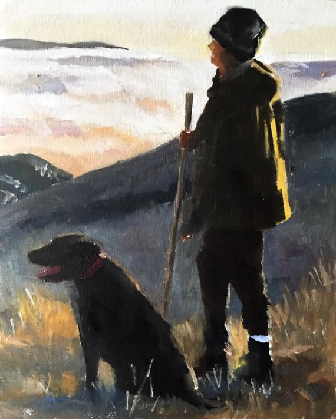

The largest shelter for stray animals . It was established in 2000 in the village. Yasnogorodka, then moved to the village. Fedorovka, Kiev region. From the first days, the shelter has existed at the expense of benefactors and people who are not indifferent to the problems of animals.
Since 2000, we have been sterilizing and finding a permanent home for dogs and cats, helping to humanely solve the problem of a huge number of stray animals. Over the years of the shelter's existence, more than 5,000 animals have found their home.
About 3,000 dogs and cats now live in the shelter. All animals of the shelter must be sterilized, and assistance is also provided in sterilizing homeless and domestic animals to low-income families in Kyiv and nearby settlements of Kyiv. areas. It is important for us to draw public attention to existing problems and implement effective projects for the benefit of society at the level of Kyiv, Kyiv region and the entire territory of Ukraine. We want to create conditions for comfortable coexistence of humans and animals.
During the period of its existence, the shelter moved twice due to the sale of the territory we leased. Each time we transported more and more animals. In 2014, the shelter finally settled on its own plot in the village. Fedorovka.
Now a building has been built on the territory of the shelter
for cats, one wing for dogs with indoor and walking enclosures and a veterinary building. Most dogs live in temporary outdoor enclosures. With proper sponsorship, we plan to build cages with a warm and walking area for all our pets and a quarantine unit.

Unfortunately, our shelter cannot accommodate all stray animals, so we urge everyone to treat their pets responsibly, sterilize dogs and cats in a timely manner, and take them from shelters, not buy them. Now the shelter is overcrowded and does not accept new animals. We are working to provide quality living conditions for more than 3,000 animals under our care.
Now we really need help in maintaining and caring for our wards, as well as in financing the further construction of the shelter.